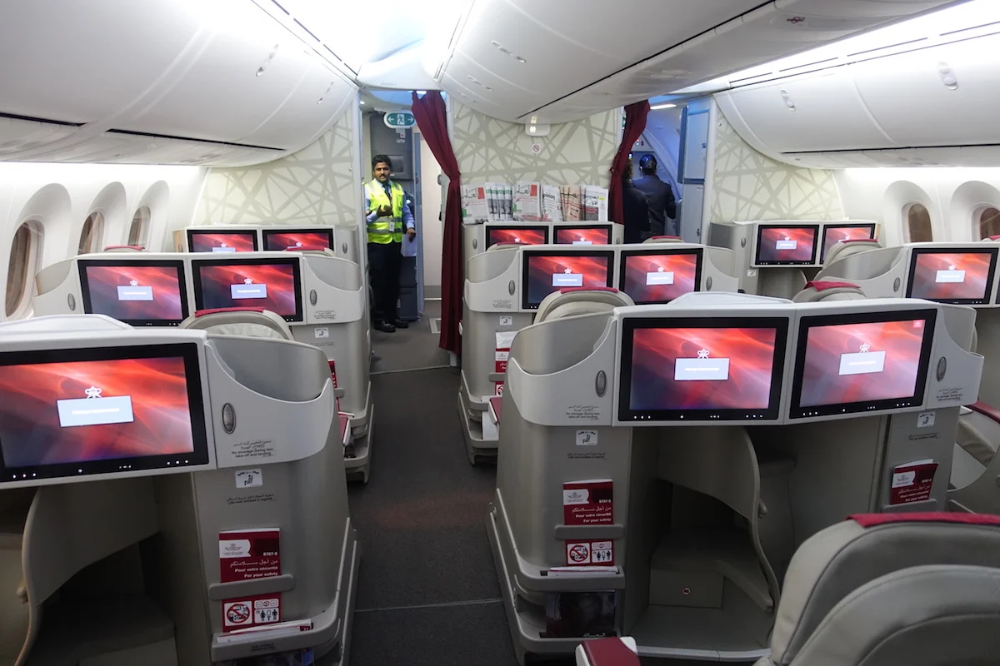

Destinations
As of September 2023 Biman serves 30 destinations with 48 routes.[107] The airline operates flights to
several destinations in the Middle East, some destinations in South and South East Asia and London and
Manchester in Europe.[108] The carrier has air service agreements with 43 countries leaving room for
further expansion in future
Biman oprates flight to-
-New York
-London
-Toronto
-Hajj Flights